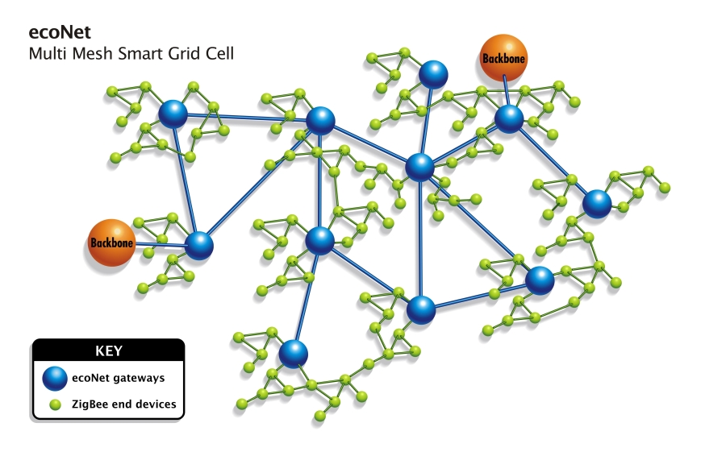

Multi-Mesh Network
The diagram above demonstrates how end point devices may route through multiple communication paths. ecoNet's patent pending multi-mesh network ensures redundant paths and provides a scalable solution for future applications.
Multi-Mesh Network Overview
The Multi-Mesh Smart Grid communications infrastructure provides utilities with a broadband, standards based solution in which the WAN, NAN, and HAN become one seamless communication network. This creates a secure end-to-end network that supports multiple applications including advanced metering reading, distribution automation, demand side management and smart home.
Security
The end-to-end network allows Utilities to ensure all security aspects - privacy, confidentiality, integrity, availability, authentication, authorization, and accountability - across their entire Smart Grid. The additional capability of providing end-to-end virtual private networking and per-application Quality-of-Service (QoS) controls ensures Smart Grid application security and performance across the entire communications infrastructure. Because of the use of standards, security can evolve over time as the standards evolve without an expensive investment in infrastructure.
Extensibility
The ecoNet Mesh infrastructure provides the bandwidth to support future applications and the standards based platform ensures the compatibility for future applications that can easily be added to the network.
Scalability
Flexible deployment of the EDS software (private or public cloud such as Amazon EC2 are equally supported) combined with the cellular nature of the ecoNet mesh allow for the Nexgrid infrastructure to scale to even the most demanding requirements, and to scale in a cost effective nature over time as Utilities grow organically (and adding acquisitions onto the network is simplified by the open nature of the solution API).